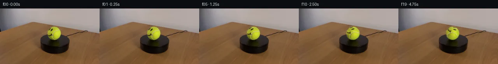

![首帧]()

Round 00
2026-11-05T08:50:24.303955+00:00像素候选变化代码 +139/−0inspection 更新
pixels 5fbf14cd00fc7995 · code 38fc0b68bb8b3d77
查看本轮 generate.py 真实 diff
--- previous/generate.py
+++ current/generate.py
@@ -0,0 +1,139 @@
+#!/usr/bin/env python3
+"""Generate the 20-frame PixelWorld continuation using local pixel transforms."""
+
+from pathlib import Path
+
+import cv2
+import numpy as np
+from PIL import Image, ImageDraw
+
+import artifact_io
+
+
+ROOT = Path(__file__).resolve().parent
+SOURCE = ROOT / "first_frame.png"
+FRAME_COUNT = 20
+FINAL_ANGLE_DEG = 65.0
+
+# The measured ball is centered at (139, 64), with an approximately 18 px radius.
+# A symmetric 49 px crop gives local center (24, 24) and ample interpolation room.
+CROP_X0, CROP_Y0 = 115, 40
+CROP_SIZE = 49
+LOCAL_CENTER = (24.0, 24.0)
+
+
+def smoothstep01(x: np.ndarray) -> np.ndarray:
+ x = np.clip(x, 0.0, 1.0)
+ return x * x * (3.0 - 2.0 * x)
+
+
+def make_rotation_alpha() -> np.ndarray:
+ """Interior-only feather: preserve the photographed silhouette and outer fuzz."""
+ yy, xx = np.mgrid[0:CROP_SIZE, 0:CROP_SIZE].astype(np.float32)
+ radius = np.hypot(xx - LOCAL_CENTER[0], yy - LOCAL_CENTER[1])
+ inner, outer = 15.7, 17.8
+ return 1.0 - smoothstep01((radius - inner) / (outer - inner))
+
+
+def rotated_ball_patch(source_patch: np.ndarray, angle_deg: float) -> np.ndarray:
+ """Rotate surface detail clockwise while keeping broad illumination stationary."""
+ patch = source_patch.astype(np.float32)
+ # The broad component represents fixed scene illumination and gross sphere shading.
+ broad = cv2.GaussianBlur(
+ patch, (0, 0), sigmaX=4.2, sigmaY=4.2, borderType=cv2.BORDER_REFLECT_101
+ )
+ matrix = cv2.getRotationMatrix2D(LOCAL_CENTER, -angle_deg, 1.0)
+ rotated = cv2.warpAffine(
+ patch,
+ matrix,
+ (CROP_SIZE, CROP_SIZE),
+ flags=cv2.INTER_CUBIC,
+ borderMode=cv2.BORDER_REFLECT_101,
+ )
+ rotated_broad = cv2.warpAffine(
+ broad,
+ matrix,
+ (CROP_SIZE, CROP_SIZE),
+ flags=cv2.INTER_CUBIC,
+ borderMode=cv2.BORDER_REFLECT_101,
+ )
+ # Mostly cancel the rotating low-frequency brightness field. Retaining 12% avoids
+ # an over-flat synthetic appearance while the visible markings rotate fully.
+ stabilized = rotated + 0.88 * (broad - rotated_broad)
+ return np.clip(stabilized, 0, 255)
+
+
+def build_frames() -> np.ndarray:
+ source = np.asarray(Image.open(SOURCE).convert("RGB"), dtype=np.uint8)
+ if source.shape != (144, 256, 3):
+ raise ValueError(f"unexpected source shape: {source.shape}")
+
+ source_patch = source[
+ CROP_Y0 : CROP_Y0 + CROP_SIZE, CROP_X0 : CROP_X0 + CROP_SIZE
+ ]
+ alpha = make_rotation_alpha()[..., None]
+ frames = []
+
+ for index in range(FRAME_COUNT):
+ if index == 0:
+ # An explicit copy guarantees exact equality to first_frame.png.
+ frames.append(source.copy())
+ continue
+ angle = FINAL_ANGLE_DEG * index / (FRAME_COUNT - 1)
+ transformed = rotated_ball_patch(source_patch, angle)
+ composed_patch = source_patch.astype(np.float32) * (1.0 - alpha) + transformed * alpha
+ frame = source.copy()
+ frame[CROP_Y0 : CROP_Y0 + CROP_SIZE, CROP_X0 : CROP_X0 + CROP_SIZE] = (
+ np.clip(np.rint(composed_patch), 0, 255).astype(np.uint8)
… diff truncated; 52 more lines …